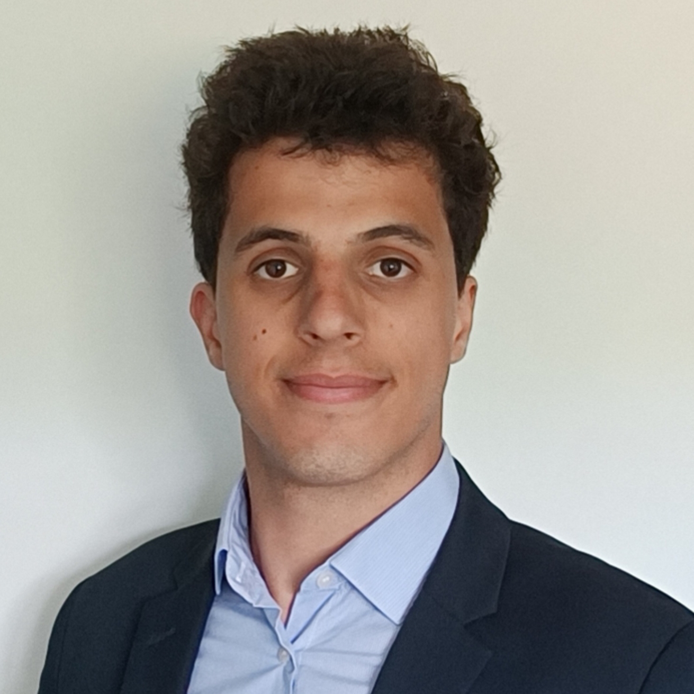
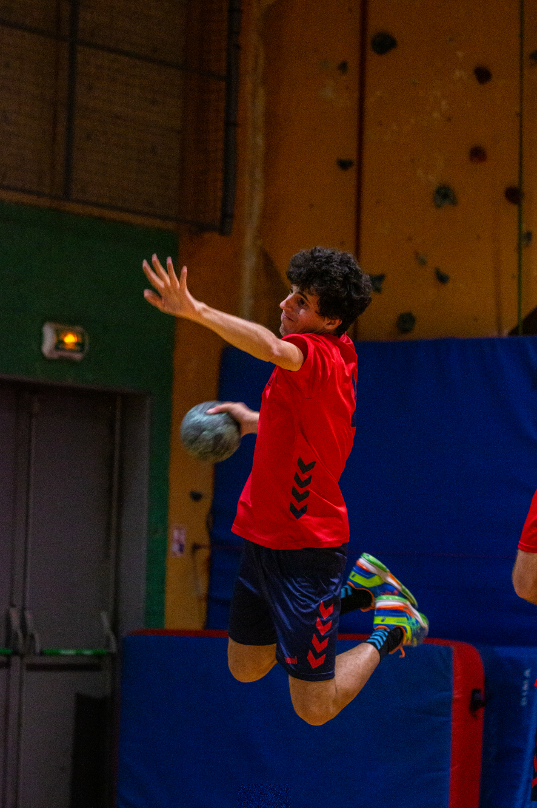

Rupamanjari Majumder
Chair Professor Junior (INSERM)
Rupamanjari Majumder is a computational biophysicist whose research focuses on the dynamics of cardiac electrical activity and the mechanisms underlying cardiac arrhythmias. She received her integrated PhD in Physics from the Indian Institute of Science, Bangalore, where she developed an interest in nonlinear dynamics in biological systems. She subsequently pursued postdoctoral research in experimental cardiology at Leiden University Medical Center in the Netherlands, working at the interface of physics and cardiac electrophysiology. From 2018 to 2023 she continued her research in Göttingen, Germany, at the Max Planck Institute for Dynamics and Self-Organization and Universitätsmedizin Göttingen, studying complex wave dynamics in cardiac tissue and developing computational approaches to understand arrhythmia mechanisms. Since 2024 she has been a Chair Professor Junior (INSERM) at l’institut du thorax in Nantes, where she leads the Computational Cardiac Complexity and Control (C4) Lab and works with her team to investigate cardiac dynamics through interdisciplinary approaches combining physics, computation, and experimental collaboration.
Beyond her scientific work, Rupamanjari is also an artist and miniaturist, an award-winning children’s author, and the proud mother of two beautiful children. As a woman in science balancing research and family life, she hopes to help shape a more inclusive scientific community and inspire the next generation of women scientists to pursue bold ideas and meaningful discoveries.

Elouan Voisin
Research engineer
Elouan Voisin is a multi-talented research engineer at l'institut du thorax in Rupamanjari Majumder's team. He has a background in applied mathematics and biology. After three years of preparatory classes at Lycée Saint-Louis in Paris, he joined Centrale Nantes in 2021 and graduated in 2025. He is currently developing the first mathematical framework for photo-pharmacological interventions in cardiac tissue. This contributes to a light-based low-energy arrhythmia control approach that does not require genetic modification of the heart.
What drives him is helping others. Deeply empathetic and motivated by a strong sense of care for people, Elouan long considered becoming a teacher before finding his path in healthcare research, where he works every day toward the goal of making the world a better place.
Outside of research, he enjoys sports, both as a player and as a spectator, and rarely misses a good game.
